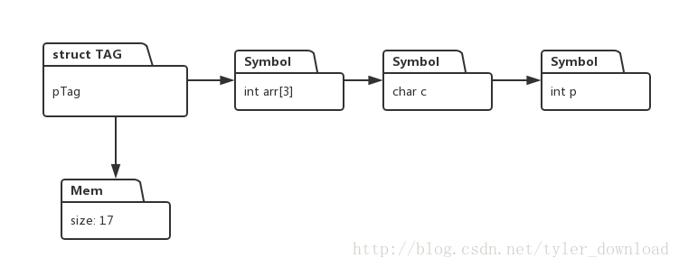

更详细的讲解和代码调试演示过程，请参看视频
用java开发C语言编译器
如果你对机器学习感兴趣，请参看一下链接：
机器学习：神经网络导论
由于设计上的原因，我们的解释器在解读结构体指针时，存有两套信息存储系统，例如对于结构体定义和结构体指针变量的相关代码如下：
struct TAG {
int p;
char c;
int arr[3];
}tag;
struct TAG *pTag;
int sz = sizeof(tag);
pTag = malloc(sz);我们根据结构体TAG 定义了一个结构体指针pTag, 并且通过malloc为该指针分配了动态内存,在解释器内部，由于设计上的原因，一个结构体指针变量应对着两套内存系统，一个是解释器会为结构体指针遍历中的每一个成员变量创建一个Symbol对象，这些对象存储在符号表中，二是解释器根据malloc调用，为该指针分配了动态内存，具体情况如下图所示：

这样带来一个问题是，我们必须保证两套内存数据的值必须是一致的，例如成员变量p的值改变了后，那么指针指向的动态内存，头四个字节的内容也需要相应改变。上一节，我们实现的就是这个功能。
本节，我们要实现的是，如果代码修改了动态内存头四个字节的数据，那么结构体的成员变量p的值也需要跟着改变。上一节做法的思路是，解释器监视结构体成员变量，每当结构体成员的值发生改变，那么解释器就把所有成员变量的值复制到内存中。这次，我们反其道而行之，在解释器读取结构体成本变量的数值之前，先把内存中的信息拷贝到每个结构体成员中。
完成本节代码后，解释器将能正确的解释执行如下代码：
void main() {
struct TAG {
char c;
char b[3];
int p;
}tag;
struct TAG* pTag;
int sz ;
sz = sizeof(tag);
pTag = malloc(sz);
pTag[0] = 3;
pTag[1] = 4;
pTag[2] = 5;
pTag[3] = 6;
printf("value of c is %d, b[0] is %d, b[1] is %d, b[2] is %d ", pTag->c, pTag->b[0], pTag->b[1], pTag->b[2]);
}当结构体成员变量被赋值或读取的语句是 pTag->c, 此类语句对应的语法表达式为：Unary -> Unary StructOP Name
负责解释执行该类语句的解释器代码处于UnaryNodeExecutor.java中，相关代码逻辑如下：
public class UnaryNodeExecutor extends BaseExecutor implements IExecutorReceiver{
private Symbol structObjSymbol = null;
private Symbol monitorSymbol = null;
@Override
public Object Execute(ICodeNode root) {
executeChildren(root);
int production = (Integer)root.getAttribute(ICodeKey.PRODUCTION);
String text ;
Symbol symbol;
Object value;
ICodeNode child;
switch (production) {
....
case CGrammarInitializer.Unary_StructOP_Name_TO_Unary:
child = root.getChildren().get(0);
String fieldName = (String)root.getAttribute(ICodeKey.TEXT);
symbol = (Symbol)child.getAttribute(ICodeKey.SYMBOL);
if (isSymbolStructPointer(symbol)) {
copyBetweenStructAndMem(symbol, false);
}
Symbol args = symbol.getArgList();
while (args != null) {
if (args.getName().equals(fieldName)) {
break;
}
args = args.getNextSymbol();
}
if (args == null) {
System.err.println("access a filed not in struct object!");
System.exit(1);
}
root.setAttribute(ICodeKey.SYMBOL, args);
root.setAttribute(ICodeKey.VALUE, args.getValue());
if (isSymbolStructPointer(symbol) == true) {
checkValidPointer(symbol);
structObjSymbol = symbol;
monitorSymbol = args;
ExecutorBrocasterImpl.getInstance().registerReceiverForAfterExe(this);
} else {
structObjSymbol = null;
}
break;
....
}
....
}在上面代码中，我添加了如下语句：
if (isSymbolStructPointer(symbol)) {
copyBetweenStructAndMem(symbol, false);
}这几行代码的作用是，判断当前Symbol所对应的变量是否是结构体指针，如果是的话，在访问该结构体变量的成员之前，先把数据从动态内存，也就是上图中Mem所代表的那部分，拷贝到各个结构体成员变量中。我们再看看copyBetweenStructAndMem 接口的实现：
private void copyBetweenStructAndMem(Symbol symbol, boolean isFromStructToMem) {
Integer addr = (Integer)symbol.getValue();
MemoryHeap memHeap = MemoryHeap.getInstance();
Map.Entry<Integer, byte[]> entry = memHeap.getMem(addr);
byte[] mems = entry.getValue();
Stack<Symbol> stack = reverseStructSymbolList(symbol);
int offset = 0;
while (stack.empty() != true) {
Symbol sym = stack.pop();
try {
if (isFromStructToMem == true) {
offset += writeStructVariablesToMem(sym, mems, offset);
} else {
offset += writeMemToStructVariables(sym, mems, offset);
}
} catch (Exception e) {
System.err.println("error when copyin struct variables to memory");
e.printStackTrace();
}
}
}它输入两个参数，第一个是结构体指针变量对应的Symbol对象，第二个参数是一个boolean 类型变量，如果他的值是true, 那么该函数调用writeStructVariablesToMem 将结构体成员变量的值拷贝到内存，如果是false, 那么调用writeMemToStructVariables 把内存数据拷贝到结构体成员变量中。
writeStructVariablesToMem 的逻辑我们上节讲过了，本节我们看看writeMemToStructVariables的实现：
private int writeMemToStructVariables(Symbol symbol, byte[] mem, int offset) throws Exception {
if (symbol.getArgList() != null) {
//struct variable, copy mem to struct recursively
return writeMemToStructVariables(symbol, mem, offset);
}
int sz = symbol.getByteSize();
int val = 0;
if (symbol.getDeclarator(Declarator.ARRAY) == null) {
val = fromByteArrayToInteger(mem, offset, sz);
symbol.setValue(val);
} else {
return copyMemToArrayVariable(symbol, mem, offset);
}
return sz;
}
private int fromByteArrayToInteger(byte[] mem, int offset, int sz) {
int val = 0;
switch (sz) {
case 1:
val = mem[offset];
break;
case 2:
val = (mem[offset + 1] << 8 | mem[offset]);
break;
case 4:
val = (mem[offset+3] << 24 | mem[offset+2] << 16 | mem[offset + 1] << 8 |
mem[offset]);
break;
}
return val;
}
private int copyMemToArrayVariable(Symbol symbol, byte[] mem, int offset) {
int sz = symbol.getByteSize();
Declarator declarator = symbol.getDeclarator(Declarator.ARRAY);
if (declarator == null) {
return 0;
}
int size = 0;
int elemCount = declarator.getElementNum();
for (int i = 0; i < elemCount; i++) {
int val = fromByteArrayToInteger(mem, offset + size, sz);
size += sz;
try {
declarator.addElement(i, val);
} catch (Exception e) {
// TODO Auto-generated catch block
e.printStackTrace();
}
}
return size;
}writeMemToStructVariables 实现的基本逻辑是，根据结构体成员变量在内存中的相对位置，以及该变量对应的字节大小，从内存中读取相关数据，把读取的信息写入到该变量所对应的Symbol对象中。例如根据给定的代码实例，结构体的成员变量c,位于结构体偏移0处，它是char类型，因此该变量对应的字节大小为1，于是，我们从动态内存其实地址为0开始，读取一个字节的数据内容，把读取的内容设置到变量c在符号表中的Symbol对象。
fromByteArrayToInteger的作用是把多个字节的数据合成一个基本数据类型，例如int类型的变量是4个字节，那么该函数先从内存数组里读出4个字节的数据，然后把这4个字节合并成一个int整形数。
copyMemToArrayVariable的作用跟我们上节讲过的函数copyArrayVariableToMem， 逻辑是一样的。
完成上面代码后，当我们通过指针修改了结构体指针指向的内存后，修改的结果就能直接反应到结构体的成员变量上，我们给定的示例代码，解释器解释执行后结果如下：
value of c is 3, b[0] is 4, b[1] is 5, b[2] is 6
由此可见，我们解释器对源代码的解释执行结果是正确的。请参看视频以便获得更详细的讲解和更详实的代码调试演示过程。
更多技术信息，包括操作系统，编译器，面试算法，机器学习，人工智能，请关照我的公众号：